The background theory of the GEOMEC results are explained here.
The sign convention adopted in GEOMEC is according to the geomechanical standards:
positive for compression
negative for
tension
General notation
For initial situations superscript 0 is used, for subsequent depletion stages i
(i=1,2,...n) is used.
Stresses
|
Total initial
stress tensor : |
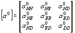 |
With N = north, E =
east
and D = depth.
Effective stress (compared
to total stress)
Effective
= total – pore pressure
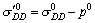
Principal stresses
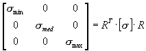
With R is the rotation matrix containing the principal direction vectors.
Invariants of effective stresses (MPa, psi)
| Label | Formula |
|---|---|
| Definitions
|
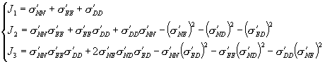 |
| (Solid) Pressure |
pressure =
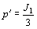 (MPa or psi) |
| I2 | (MPa2 or psi2) |
| I3 | (MPa3 or psi3) |
| Von Mises |
(= differential stress in triaxial conditions) (MPa or psi) |
| Tresca |
(= maximum shear stress) (MPa or psi) |
| Mean stress |
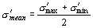 (disregarding the intermediate stress)(MPa or psi) |
Shear capacity
Ratio of shear stress to failure shear stress on basis of Mohr-Coulomb failure criterium.
Stress changes (only
for depletion stages)
Stress change
= stress depletion stage – initial stress
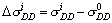
Gamma
The Gamma-value is the ratio of change in total stress over change in fluid pressure (pore pressure) and only available in depletion areas (i.e. non-zero pressure change). For a large depleting field with little stress arching the total stress (overburden weight) remains the same, by which gamma-vertical is about 0 and about equal to the gamma-maximum . The Gamma-minimum is usually a horizontal direction, in which the matrix loading is only part of the depressurisation unloading. The gamma-minimum is hence usually between 0.2 and 0.8.
| Label | Formula |
|---|---|
| Gamma vertical |
g=DsD/Dp |
| Gamma maximum |
g=Dsmax/Dp |
| Gamma intermediate |
g=Dsmed/Dp |
|
Gamma minimum |
g=Dsmin/Dp |
|
Gamma volume |
g=(Ds1+Ds2+Ds3)/3Dp |
|
Volume average |
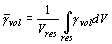 With Vres
= Volume reservoir |
Strains
Geomec calculates the total strains (strain increments) from the total node displacement (increment) field. Plastic (permanent) strains components are calculated from the updated stress and strain values. Elastic strains are no standard output of Geomec but can be calculated by subtracting the plastic and creep components from the total strain.
|
strain tensor |
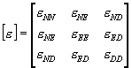 |
Principal strains
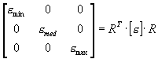
With R is the
rotation matrix containing the principal direction vectors.
Plastic
ep
= et-
Strain invariants
| Label | Formula |
|---|---|
| Definitions |
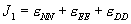
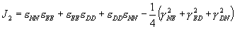
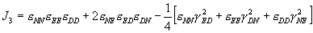 |
| Volumetric strain |
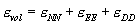 |
| I2 | |
| I3 | |
| Von Mises |
( |
Displacements
|
Displacement
vector |
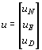 |
|
|
Displacement
length |
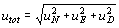 |
|